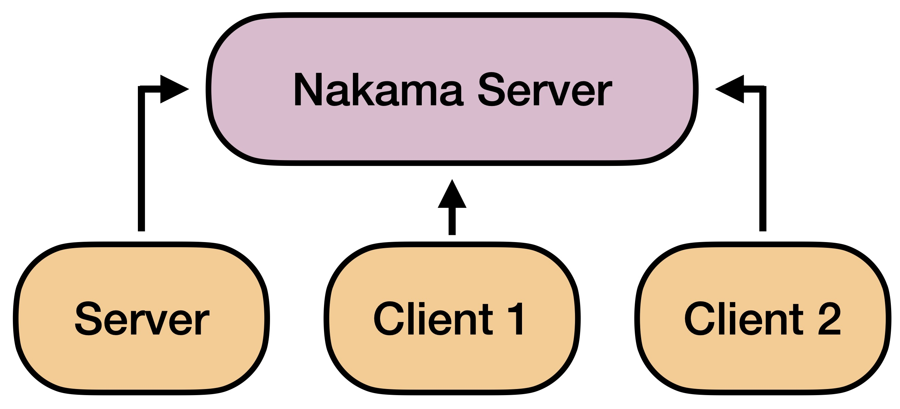

Multiplayer Networking
Dojo's core feature includes networking, allowing any game developed with Dojo to be multiplayer over the Internet by default. This setup enables players and AI agents to access the game from anywhere in the world, greatly enhancing the research's accessibility and encouraging collaborations with individuals beyond the research lab.
Game Networking
Two packages, Nakama and Unity netcode, enable multiplayer networking in the game. Nakama manages the connection between Unity instances, providing each with a unique identity and allowing them to discover and join the same match for interaction. Meanwhile, Unity netcode builds on top of Nakama as a transport layer, facilitating game state synchronization and ensuring fair gameplay across all clients.
Networking Model
By default, Dojo utilizes a server-client networking model to facilitate easy game synchronization. This model involves a single server and one or more clients per game. Whenever a client initiates an action, it transmits its command to the server, which then determines the order in which the actions are executed and updates the game state accordingly. Finally, the server broadcasts the latest game state to all clients, ensuring that each client observes the exact same game state.
For Dojo, both the server and client connect to the same Nakama server to transport their messages. Although they have different roles in Dojo, they are both clients of the Nakama server.

Match
Nakama offers a robust match-making system that enables users to join independent games and communicate with one another in real-time. This functionality can be likened to a virtual room where players can meet and interact. By leveraging the match system, Dojo is capable of hosting numerous games simultaneously using just a single Nakama server. Players can easily join any game by simply following the corresponding match ID.
Identity
Each Unity instance acts as a client to the Nakama server, and upon initial connection, it receives a unique identity from Nakama. This identity is used to track and identify instances within the same game. While Nakama prefers to maintain the persistent identity of each Unity instance, Dojo does not follow this approach. Instead, we have implemented code to automatically delete identity information when an instance disconnects, effectively avoiding this feature.
Role
Dojo facilitates effortless development of human-AI multiplayer games by assigning a unique abstract identity to each Unity instance in the game. The network roles available in the game include:
- Server
- Player
- Viewer
The Server instance is the primary instance that hosts a Nakama match. This authoritative instance enables other clients to discover and join the same match, allowing them to start playing the game. Only one Server instance is necessary per match.
On the other hand, a Player instance is the human client that acts as the player in the game, while a Viewer instance is the human client that can only observe the game without the ability to affect game states. The primary difference between a Player and a Viewer is that a Player has the ability to interact with the game and change game states.
Configuration
Dojo offers game-specific configurations in addition to network roles. These configurations allow developers to define the game tag, ensuring that clients only connect to servers running the same game. Additionally, developers can set a maximum number of players for the game, which is useful for developing single-player games like Tetris. While there is no limit to the number of viewers for any game, the maximum number of allowed players is enforced.
AI Networking
Nakama has a unique design that facilitates effortless connection to currently operational AI policy programs. Unity ml-agents enables AI networking. Usually, the AI players run on a Server instance, while the Algorithms created AI policy programs operate on the same machine as the Server instance.
Human-AI Connection
Unity netcode manages the interaction between humans and AI in the game, while the Nakama layer enables human clients to send customized messages to the AI. When a Viewer instance initiates human feedback, the message is sent to the server with the agent ID, which is then transported through Unity ml-agents to the running policy on the Algorithms side.